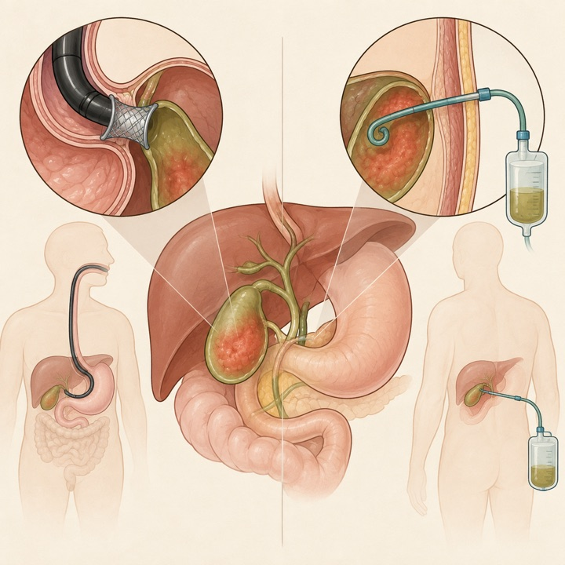
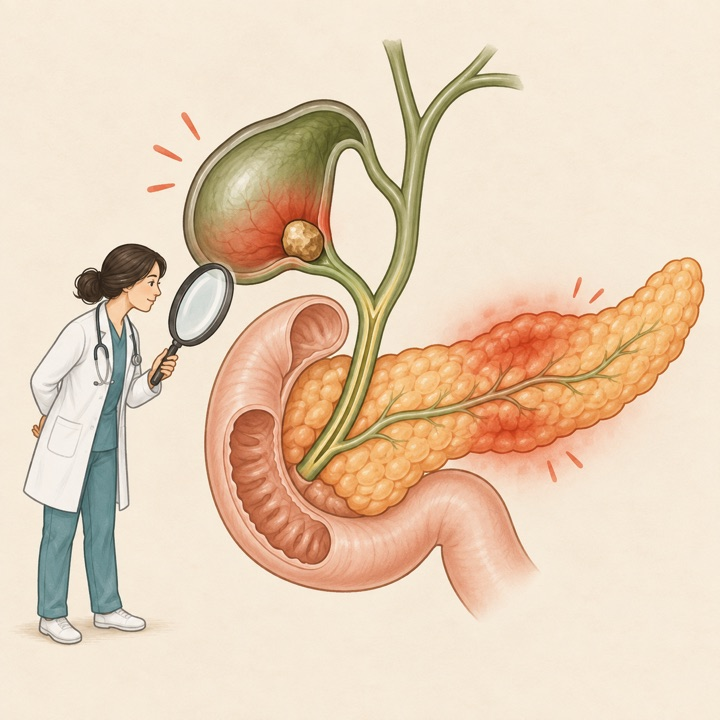
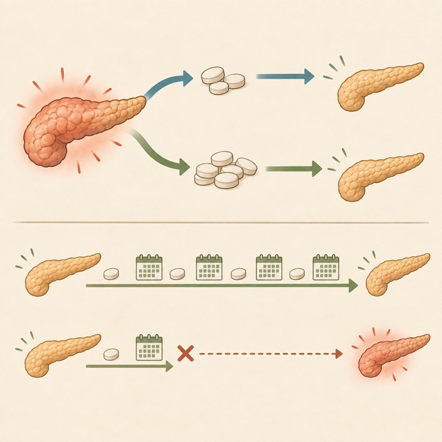
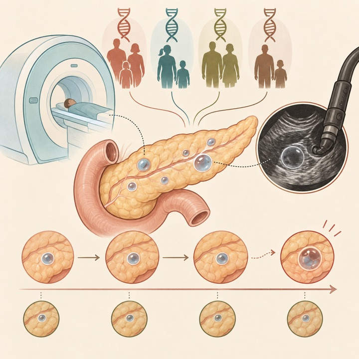
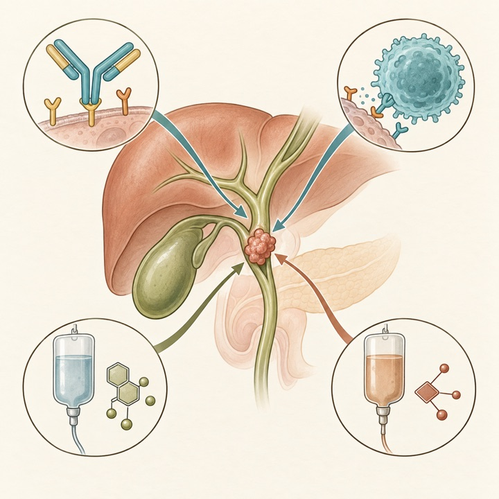
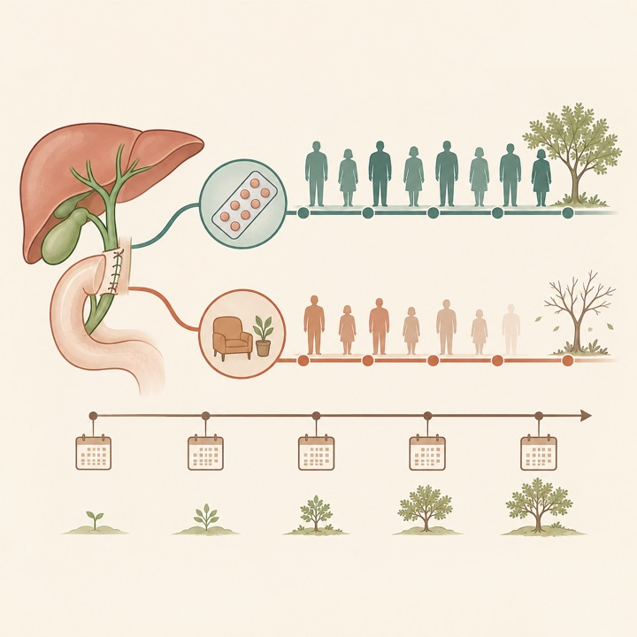
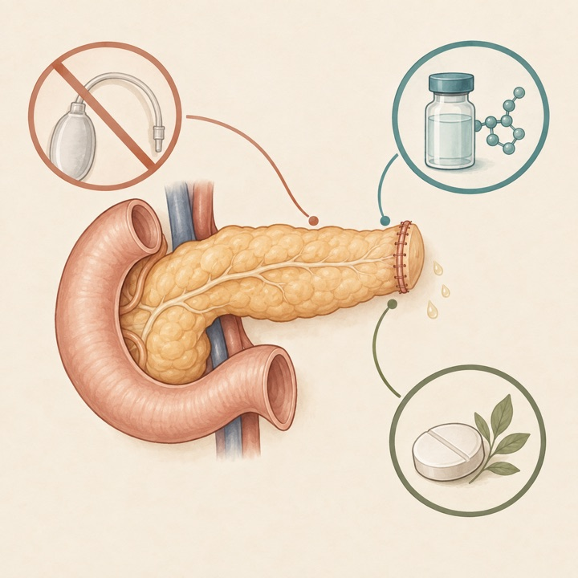
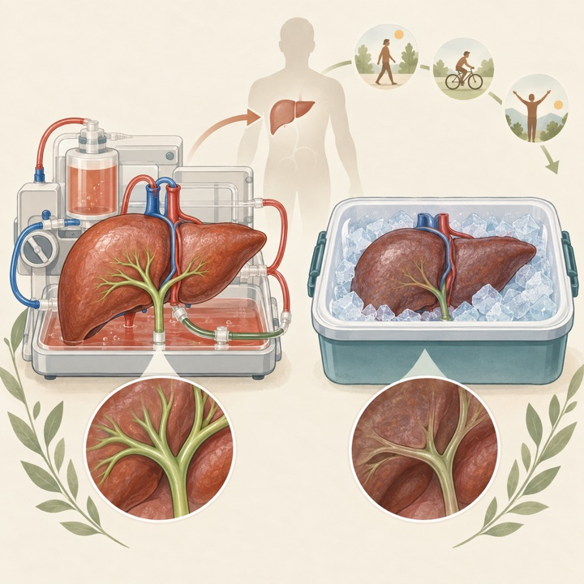

HER2陽性進行胆道癌の一次治療で奏効率55%
Nature Medicine / Q1Phase 1b/2 / HERBOT
trastuzumab＋nivolumab＋gemcitabine/cisplatinの40例単群試験。病勢制御率95%ですが、標準治療との比較は今後の第III相試験が必要です。
Tokai University Pancreatobiliary Group
This Week's Pancreatobiliary Research Highlights
臨床的重要性、研究デザイン、診療への応用可能性を基準に4報を選定しました。IFとJCR quartileは2025年値（2026年公表、判明した最良カテゴリ）を使用し、確実に確認できない場合はQ4とする方針です。
trastuzumab＋nivolumab＋gemcitabine/cisplatinの40例単群試験。病勢制御率95%ですが、標準治療との比較は今後の第III相試験が必要です。
切除胆道癌440例で5年OSは64%対52%、HR 0.72。日本発エビデンスとして術後S-1の標準的位置づけを補強します。
左側膵切除でのドレーン省略、周術期ソマトスタチン類似薬、周術期ステロイドの3介入がメタ解析後も有効でした。
6比較研究712例。PTGBDよりデバイス関連再入院が少ない方向でしたが、感度分析に頑健でなく、普遍的優越性は未確立です。
日本語: 1件のRCTと5件の観察研究、計712例を統合しました。デバイス・ドレナージ関連の予定外再入院はEUS-GBD 7.0%対PTGBD 37.1%で全研究がEUS-GBDを支持しましたが、Hartung–Knapp法の統合95%CIは1をまたぎ、1研究除外解析でも結論は不安定でした。臨床的成功、30日有害事象、死亡は明確な差を示さず、技術的成功はEUS-GBDでわずかに低い方向です。エビデンス確実性は低〜非常に低く、専門施設での選択肢を支持する一方、普遍的な第一選択への置換は裏づけません。
English: EUS-GBD showed a consistent numerical reduction in device-related readmission, but the pooled estimate was not robust. Clinical success and mortality were similar, and certainty remained low to very low.

日本語: 胆石性急性膵炎と急性結石性胆嚢炎が併存するcholecystopancreatitisを、国際RELAPSTONEコホート3,016例で厳格に再判定しました。初期診断135例のうち117例（全体3.9%）が確定し、65%は同時発症でした。臓器不全はやや多いものの、ICU入室や在院日数は単独病態と差がありません。過剰診断は不必要な抗菌薬や胆嚢摘出時期に影響しうるため、両病態の診断基準を独立に確認する重要性を示します。
English: Strict review confirmed acute cholecystopancreatitis in 117 of 3,016 patients. Misclassification was common, and confirmed coexistence did not consistently worsen major clinical outcomes.

日本語: AIP 90例を初期prednisolone >0.4 mg/kg/日（62例）と≤0.4 mg/kg/日（28例）で比較しました。反応率はいずれも100%、再燃率33.9%対32.1%で差はなく、低用量導入は再燃因子ではありませんでした。独立再燃因子は維持療法を3年以内に中止（HR 5.32）、膵容積大、治療1か月後のIgG4低下率小でした。非無作為・少数で投与選択の交絡があり、低用量を一律標準とする根拠ではありませんが、導入量より維持期間と早期反応評価の重要性を示します。
English: Low- and higher-dose steroid induction produced similar response and relapse rates. Early maintenance discontinuation, larger pancreatic volume, and smaller early IgG4 decline predicted relapse.

日本語: イタリア25施設の遺伝性膵癌高リスク者1,688人をMRI/MRCP・EUSで追跡し、496人（29.4%）に推定IPMNを認めました。ベースラインに嚢胞がなかった1,298人中124人（9.6%）が新規発生し、遺伝子リスク群間で発生率、嚢胞・主膵管径の推移に差はありませんでした。worrisome feature／high-risk stigmataへの進展は13人（2.6%）と少数です。追跡中央値17か月と短く、遺伝子別の長期リスク差やサーベイランス間隔を変える根拠には未成熟です。
English: Presumed IPMN incidence and short-term growth did not differ across hereditary-risk groups. Progression was uncommon, but median follow-up was only 17 months.

日本語: HER2陽性進行胆道癌40例に、一次治療としてtrastuzumab、nivolumab、gemcitabine、cisplatinを投与しました。奏効率55%（完全奏効1、部分奏効21）、病勢制御率95%、奏効期間中央値12.6か月、PFS 10.6か月で、2例が根治意図のconversion surgeryに進みました。grade 3以上の好中球減少57.5%、貧血30.0%、血小板減少22.5%。HER2 3+細胞割合と効果の関連は探索的です。単群40例で四剤併用の寄与を分離できず、標準化学免疫療法との第III相比較を待つべき結果です。
English: The HER2-targeted quadruplet achieved a 55% response rate and 95% disease control in 40 patients. Hematologic toxicity was frequent, and randomized comparison remains essential.

日本語: 日本の多施設非盲検RCTで、切除胆道癌440例をS-1術後補助療法（218例）と経過観察（222例）に割り付けました。追跡中央値61.5か月で5年OSは64%対52%、HR 0.72（95%CI 0.55–0.95）。OS中央値は8.2年対5.9年で、治療効果は概ねサブグループ間で一貫しました。再発無生存の非層別HRは0.80でCIが1をまたぎましたが、層別HRは0.76でした。地域・人種差を踏まえた外的妥当性は必要ながら、術後S-1の長期利益を確認する重要な追跡です。
English: At 5 years, adjuvant S-1 improved overall survival to 64% versus 52% after resection. The prespecified follow-up confirms sustained benefit in this Japanese phase III trial.

日本語: 2005〜2025年の部分膵切除を扱うRCT 193件、29,408例を統合し、grade B/C膵液瘻の全体率は15.1%（膵頭十二指腸切除14.2%、左側膵切除19.1%）でした。3試験以上で評価可能な8介入のうち、メタ解析後も有効だったのは左側膵切除でのドレーン省略（確実性高）、周術期ソマトスタチン類似薬（中）、周術期ステロイド（低）の3つです。術式・リスク別の異質性、介入併用試験の欠如があり、全例への一律適用ではなく個別化が必要です。
English: Across 193 randomized trials, drain omission after left pancreatectomy, somatostatin analogues, and perioperative corticosteroids remained effective. Certainty and applicability differed by intervention.

日本語: 単施設DCD肝移植306例で、常温機械灌流（NMP 95例）と静的冷保存（SCS 211例）を比較しました。NMPは早期移植肝機能不全35.8%対59.7%、虚血性胆管障害4.2%対23.7%、2年以内再移植0%対6.6%と少なく、2年graft survival改善と関連しました。一方、365日中の生存・院外日数は調整後に差がなく、2年患者生存と1年費用も有意差なし。導入時期と症例選択を伴う単施設後ろ向き研究で、患者中心アウトカムを含む前向き多施設検証が必要です。
English: NMP was associated with less early graft dysfunction, ischemic cholangiopathy, retransplantation, and better 2-year graft survival, but not independently with days alive out of hospital.

ClinicalTrials.gov公式APIを2026年9月27日に検索し、9月21日〜27日に新規公開された直接関連研究15件と、診療・開発上重要な更新15件を選択しました。一般固形癌のみ、嚢胞性線維症、糖尿病、食物アレルギー、PBC、無関係なIgG4・EUS略語などは除外しています。JRCTは検索していません。
| 新規｜PDAC周術期支援 | NCT07829471 術前治療中のePRO症状モニタリング 2026-09-21公開 / 200例 / Not yet recruiting。 |
|---|---|
| 新規｜進行BTC | NCT07829874 凍結療法＋QL1706＋lenvatinib 2026-09-21公開 / 第II相 / 180例 / Not yet recruiting。 |
| 新規｜治療抵抗性BTC | NCT07830147 HAIC再導入の有効性・安全性 2026-09-21公開 / 72例 / Completed。 |
| 新規｜BTC液体生検 | NCT07830628 胆汁ctDNAと腫瘍組織のゲノム一致度 2026-09-21公開 / 100例 / Not yet recruiting。 |
| 新規｜転移性PDAC | NCT07831330 albumin-bound paclitaxel（II）＋gemcitabine一次治療 2026-09-21公開 / 第II相 / 59例 / Not yet recruiting。 |
| 新規｜膵切除術式 | NCT07831694 部分十二指腸膵切除対全膵切除の術後転帰 2026-09-21公開 / 3,602例 / Completed。 |
| 新規｜転移性BTC | NCT07831993 sintilimab＋NALIRIFOXまたはGC 2026-09-21公開 / 第II相 / 54例 / Recruiting。 |
| 新規｜悪性胆道閉塞 | NCT07832045 EUS-HGS単独対antegrade stenting併用RCT 2026-09-21公開 / 88例 / Recruiting。 |
| 新規｜切除可能PDAC | NCT07833241 surufatinib＋二重免疫抗体＋AG術前療法 2026-09-22公開 / 第II相 / 56例 / Not yet recruiting。 |
| 新規｜pNET肝転移 | NCT07835893 lenvatinib＋化学療法 2026-09-23公開 / 第II相 / 80例 / Recruiting。 |
| 新規｜局所進行PDAC | NCT07839676 / PANHEAT 温熱療法＋化学放射線療法 2026-09-24公開 / 60例 / Not yet recruiting。 |
| 新規｜肝内胆管癌 | NCT07841574 HAIC＋QL1706＋bevacizumab 2026-09-25公開 / 第II相 / 35例 / Recruiting。 |
| 新規｜HER2陽性BTC | NCT07841873 zanidatamab＋liposomal irinotecan＋capecitabine二次治療 2026-09-25公開 / 第II相 / 15例 / Not yet recruiting。 |
| 新規｜ERCP画像支援 | NCT07841886 XRAIconnect画像ガイダンスソフトウェア 2026-09-25公開 / 50例 / Not yet recruiting。 |
| 新規｜膵腫瘍・嚢胞 | NCT07843147 血糖・腫瘍・嚢胞マイクロバイオーム研究 2026-09-25公開 / 100例 / Not yet recruiting。 |
| 更新｜進行BTC | NCT03478488 PD-L1阻害薬＋化学療法第III相 2026-09-23更新 / 472例 / Completed。 |
| 更新｜IgG4-RD | NCT07190196 rilzabrutinib対placebo 52週試験 2026-09-23更新 / 第III相 / 124例 / Recruiting。 |
| 更新｜PSC | NCT04685200 PSCの多領域統合的自然歴・機序研究 2026-09-22更新 / 143例 / Recruiting。 |
| 更新｜KRAS G12D PDAC | NCT07522073 一次化学療法±INCB161734 2026-09-22更新 / 第III相 / 588例 / Recruiting。 |
| 更新｜術後PDAC | NCT07252232 daraxonrasib術後補助第III相 2026-09-23更新 / 500例 / Recruiting。 |
| 更新｜転移性PDAC | NCT07562152 atebimetinib＋GnP一次治療 2026-09-25更新 / 第III相 / 510例 / Recruiting。 |
| 更新｜膵癌悪液質 | NCT06989437 ponsegromab第II/III相 2026-09-25更新 / 982例 / Recruiting。 |
| 更新｜RAS変異PDAC | NCT06445062 RAS(ON)阻害薬master protocol 2026-09-22更新 / 第I/II相 / 1,130例 / Recruiting。 |
| 更新｜PDAC・BTC | NCT06428409 / MK-9999-02A sacituzumab tirumotecan単剤・併用 2026-09-25更新 / 第I/II相 / 220例 / Recruiting。 |
| 更新｜遺伝性術後PDAC | NCT04858334 / APOLLO BRCA1/2・PALB2変異に対するolaparib対placebo 2026-09-25更新 / 第II相 / 152例 / Recruiting。 |
| 更新｜IPMN | NCT04275557 radiogenomicsによる悪性化予測 2026-09-23更新 / 1,274例 / Active, not recruiting。 |
| 更新｜急性膵炎 | NCT07714850 / ENDOPAN 急性膵炎の内視鏡評価研究 2026-09-24更新 / 200例 / Recruiting。 |
| 更新｜機械灌流肝移植 | NCT07585890 欧州の転帰benchmark構築 2026-09-25更新 / 10,000例 / Recruiting。 |
| 更新｜慢性膵炎 | NCT07074379 無痛性慢性膵炎の内視鏡治療／ESWL 2026-09-23更新 / 126例 / Recruiting。 |
| 更新｜進行膵癌 | NCT06882746 BI 765049用量探索 2026-09-24更新 / 第I相 / 14例 / Terminated。 |
PubMedの2026年9月21日〜9月27日EDATに加え、Nature Reviews Gastroenterology & Hepatology、The Lancet Gastroenterology & Hepatology、Gastroenterology、Gut、Clinical Gastroenterology and Hepatology、Annals of Surgery、Journal of Hepato-Biliary-Pancreatic Sciences、Gastrointestinal Endoscopy、Endoscopy、Surgical Endoscopy、Endoscopy International Open、VideoGIE、Clinical Endoscopy、Digestive Endoscopy、DEN Open、iGIEの公式サイトと、選定論文の公式出版社ページを直接確認しました。出版社側のアクセス制限がある場合は、公式DOI解決先とPubMed索引を突合しました。IFは2025 Journal Impact Factorを優先し、quartileを確実に確認できない誌は依頼方針に従いQ4と表示しています。速報・ahead of printの情報は更新されることがあります。
2026年9月14日〜9月20日版
2026年9月9日〜9月15日版
2026年8月31日〜9月6日版
2026年8月24日〜8月30日版
2026年8月17日〜8月23日版
2026年8月10日〜8月16日版
2026年8月3日〜8月9日版
2026年7月27日〜8月2日版
2026年7月20日〜7月26日版
2026年7月13日〜7月19日版
2026年7月6日〜7月12日版
医療従事者向け情報： 本ページは医師・医学生・研究者向けの文献整理であり、患者向け広告、診療ガイドライン、個別の診断・治療助言ではありません。掲載内容は公開時点の情報に基づき、原著論文・最新ガイドライン・各施設の方針をご確認ください。